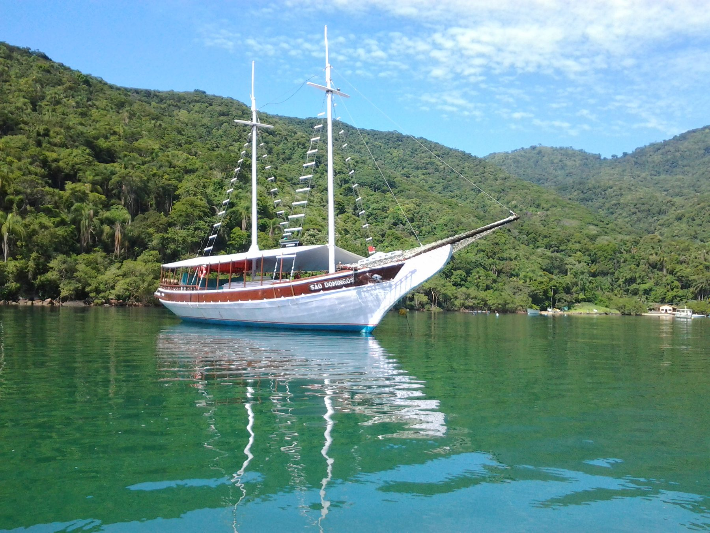

Até 120 passageiros
Escuna São Domingos
Para excursões, famílias, festas, casamentos e eventos de empresa. Churrasqueira, mini-cozinha, dois banheiros e som com DJ a bordo sob pedido.
- Churrasco a bordo
- 2 banheiros
- Macarrões flutuantes
- Som + DJ opcional